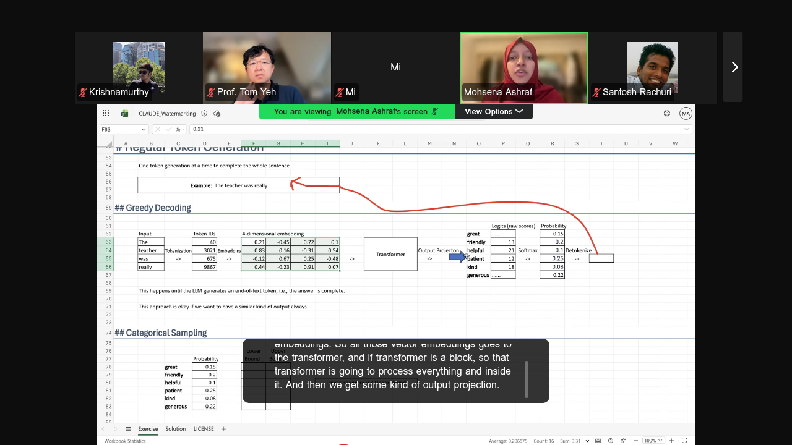
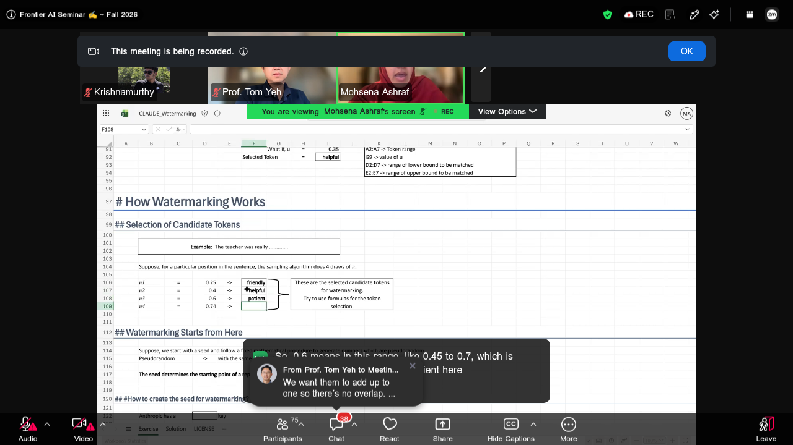
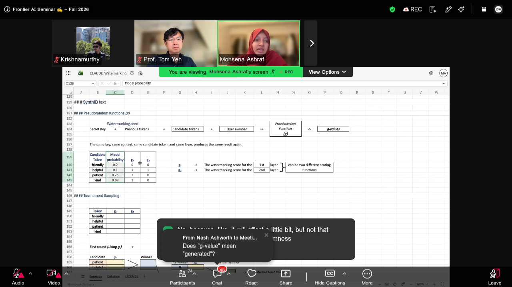
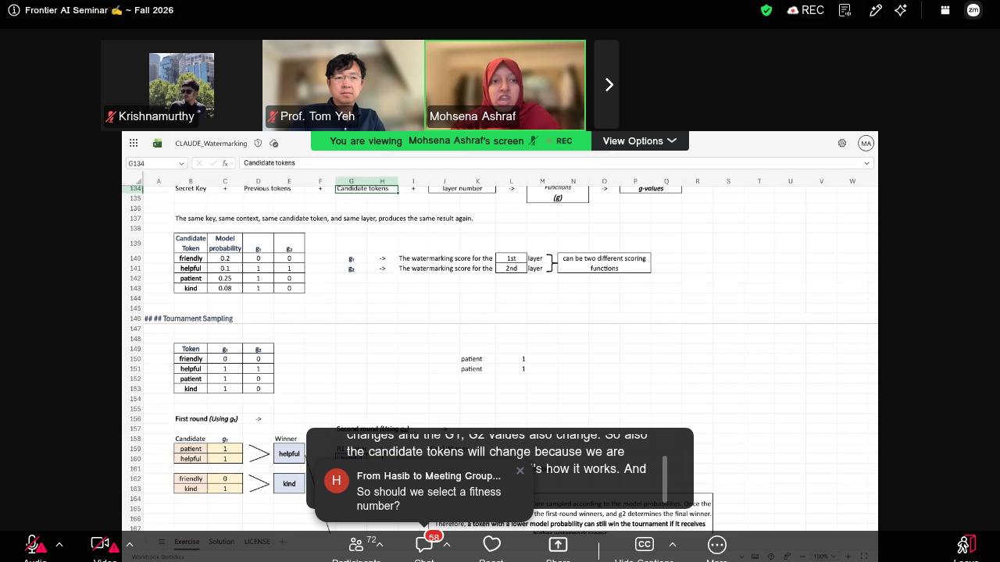
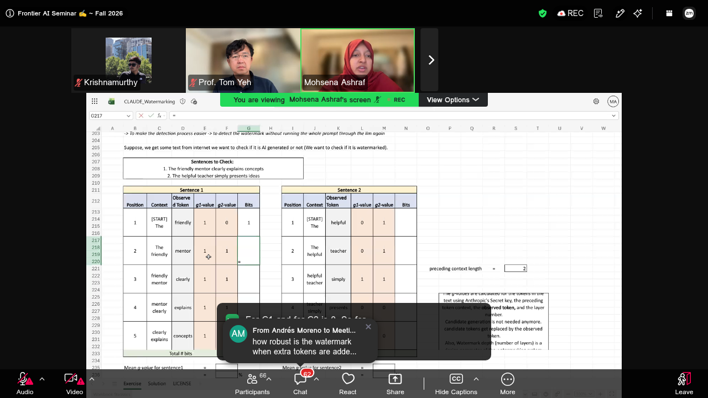
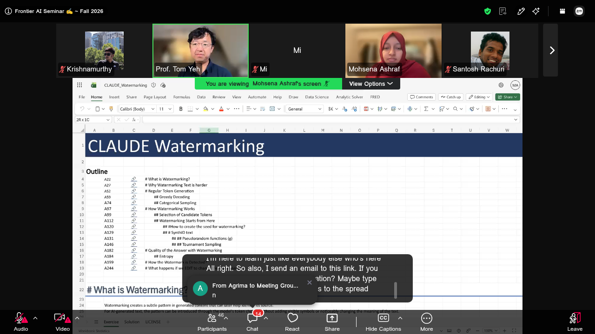

What is watermarking?
Watermarking creates a subtle, hidden pattern inside AI-generated content through the model's own token choices - no special characters, nothing visible, and no change to the meaning of the text. The pattern is invisible to a human reader but can be detected later by an algorithm to check whether a piece of text was AI-generated.
Claude's watermarking (which Mohsena noted came out in late August) is based on SynthID-Text, Google DeepMind's scheme published in Nature. With rules like the EU AI Act pushing for AI-content transparency, detectable generation is becoming a real product requirement.
Tom's framing in chat: "Adding some subtle pattern detectable by machine but not by humans."
Why watermarking text is harder than images
For images you can tweak a few pixels slightly - the picture looks identical to a person, but a detector sees the pattern. Text gives you no such slack: words are discrete. Change "January" to anything else in "The first month of the year is January" and the sentence is simply wrong.
Recap: how a token is normally generated
Mohsena rebuilt the standard generation pipeline in the workbook for the prompt "The teacher was really ___":
- Tokenization - words become token IDs (the=40, teacher=3021, was=675, really=9867).
- Embedding - each ID becomes a vector (4-dimensional in the workbook, for hand calculation).
- Transformer - processes the vectors and produces an output projection.
- Logits to probabilities - raw scores go through softmax, giving a probability for every word in the (tiny, 6-word) vocabulary.
- Detokenize - the chosen token ID becomes text again.
| Candidate word | Probability |
|---|---|
| great | 0.15 |
| friendly | 0.20 |
| helpful | 0.10 |
| patient | 0.25 |
| kind | 0.08 |
| generous | 0.22 |
This repeats one token at a time until the model emits an end-of-text token.

Greedy decoding vs categorical sampling
Greedy decoding always takes the top probability: "patient" (0.25) wins every time. Reliable, but always the same answer.
Categorical sampling instead gives every token a slice of the range from 0 to 1, exactly as wide as its probability: great gets [0, 0.15), friendly [0.15, 0.35), helpful [0.35, 0.45), patient [0.45, 0.70), kind [0.70, 0.78), generous [0.78, 1.0). Draw a random number u; whichever slice it lands in is the next token. u = 0.62 picks "patient"; u = 0.35 picks "helpful" (lower bound inclusive).
Watermarking, step 1 - pick candidate tokens
Instead of drawing one random number, draw several - the workbook does 4 draws: u1=0.25, u2=0.4, u3=0.6, u4=0.74. Each draw maps to a token through the same probability ranges, producing a set of candidate tokens: friendly, helpful, patient, kind.
- High-probability tokens appear as candidates more often, because their slices are wider - so the candidates still respect the model's distribution.
- The number of draws is a design choice (SynthID uses 2m candidates for m tournament rounds).
- The same token can be drawn twice - it then competes against itself and trivially wins that match.

Watermarking, step 2 - build the seed
The scheme needs randomness that an authorized detector can reproduce exactly - pseudorandomness: a fixed procedure that looks random but repeats perfectly from the same seed.
The watermarking seed combines two parts:
- A secret key - held by the model provider (Anthropic's private key in the Claude case). Nobody else can compute or fake the scores without it. Anthropic plans to expose detection through an API for third parties; it was not yet available at the time of the session.
- The previous tokens - SynthID-Text uses the 4 preceding tokens (a design choice). As generation moves forward, the context window slides and the seed changes for every position.
Watermarking, step 3 - score each candidate with g-functions
Each candidate token is scored by pseudorandom functions g - one per tournament layer (g1 for round 1, g2 for round 2, and the two may be entirely different scoring functions). The inputs are the watermarking seed, the candidate token, and the layer number; the output is a g-value (0 or 1 in the workbook's binary version).
| Candidate token | Model probability | g1 | g2 |
|---|---|---|---|
| friendly | 0.20 | 0 | 0 |
| helpful | 0.10 | 1 | 1 |
| patient | 0.25 | 1 | 0 |
| kind | 0.08 | 1 | 0 |
These values are deterministic for anyone holding the secret key - and pure noise to anyone without it. A g-value says nothing about how good a word is; it is the watermark's hidden vote.

Watermarking, step 4 - tournament sampling
The candidates now compete in a knockout tournament - Mohsena's metaphor was a World Cup bracket:
- Round 1 (judged by g1): patient (1) vs helpful (1) - a tie, broken by a random pick: helpful advances. friendly (0) vs kind (1) - kind advances.
- Final (judged by g2): helpful (1) vs kind (0) - helpful wins.
- The model emits: "The teacher was really helpful."
This whole process repeats for every token position, with the seed sliding along the freshly generated context. Watermarking is applied to every decoded token, not just important words.

Does watermarking hurt quality? Entropy decides
Only a little - because the candidates themselves come from the model's own probability distribution, so the tournament is choosing among things the model was already willing to say.
- Low-entropy text: "The Earth moves around the ___" - "sun" is essentially forced. The watermark has almost no room to act.
- High-entropy text: "The baby is crying for ___" - many plausible continuations, so the tournament has real freedom and the watermark embeds strongly.
SynthID-Text therefore watermarks fluent, open-ended text most effectively and leaves near-deterministic text mostly untouched.
Detection: scoring a suspicious text
Detection is deliberately cheap - no LLM re-run, just the seed math. Take a text found in the wild, e.g. "The friendly mentor clearly explains concepts":
- For each position, rebuild the seed: secret key + preceding tokens (2 in the workbook's detection example; a design choice, 4 in SynthID generation).
- Candidate generation is skipped - the observed token replaces the candidate list. You just score the token that actually appears.
- Compute g1 and g2 for every observed token, count the bits (how many g-values equal 1), and average: mean g-value = total bits / total g-values.
- In the workbook example the first sentence scores about 0.9 (90%) - far above the 60% threshold - so it is flagged as watermarked. Unwatermarked text hovers near random (about 50% with binary g-values and two layers).

Breaking the watermark with a single word
The closing demo edited exactly one token: mentor to teacher. Because the seed depends on previous tokens, that one edit cascades - the observed token changes, and the context changes for every following row:
- Several g-values flip; the bit count shifts (the change is not always negative - it depends on the g-values involved).
- The sentence's mean g-value dropped from 0.9 to 0.4 - below the 60% threshold, so the detector no longer flags it.
Wrap-up and resources
- The whole session was worked live in the Excel workbook CLAUDE_Watermarking - get it at byhand.ai/watermarking.
- The underlying scheme: Scalable watermarking for identifying large language model outputs (SynthID-Text, Nature, Oct 2024) and its open-source code.
- Companion seminar from the summer: Counting Transformer Ops by Hand.
- This is Mohsena's PhD dissertation topic - translating a hard, current AI concept into familiar metaphors and hand calculation. Her thesis proposal is coming up soon.
- Tom mentioned the session recording was started late, so the beginning was not captured by the host. These notes cover the full hour from 12:00 AM.

No, she doesn't say no anymore. Before, I remember last year, she was in, I'm not sure, let me think about it, but she took on any challenge I threw at her recently. So anyway, so that's how it is. So we're gonna see. I haven't studied this topic that deeply, so I'm here to learn just like everybody else who's here All right.
So also, I send an email to this link. If you have it, can you give us an indication? Maybe type one in the chat if you have access to the spreadsheet. In the email. Cool.No, she doesn't say no anymore.
In the email. Cool, Michael, you got it. Great. If you have All right. Okay, we'll have a good a lot of wine.
Good to see you, Jim, and good to see Elijah. All right, so we should, we'll send it, do you want to take it away? [Mohsena] Yeah, hi In the email. Great. All right, so we should, we'll send it, do you want to take it away?
[Mohsena] Yeah, hi everyone, good morning from my side. All right. And I know it's All right. And I know it's different times in different All right. And I know it's different times in different regions, but All right.
And I know it's different times in different regions, but here it's morning. So yeah All right. So yeah, good morning, everyone, for joining the session. And… yeah
[Mohsena] Yeah, hi everyone, good morning from my side. And yeah, I'm really happy to present this
[Mohsena] And yeah, I'm really happy to present this like concept in spreadsheet or Excel, whatever you say.
And yeah. [Mohsena] And yeah, I'm really happy to present this like concept in spreadsheet or Excel, whatever you say. And yeah, if you have the workbook with you, you can just take a quick look with me And start working on it
[Mohsena] And start working on it, or if you are more interested in just learning, you can just, see the lecture and understand what is happening there. So today we are going to learn about the watermarking Yeah, thanks, Tom, for earning this. So yeah, we are going
[Mohsena] Yeah, thanks, Tom, for earning this.
So yeah, we are going to talk about the Claude's watermarking which came out, I believe, late August. So, it's still relevant and still a newly topic, and we are going to talk about like what is this particular thing means actually like are
[Mohsena] So, it's still relevant and still a newly topic, and we are going to talk about like what is this particular thing means actually like are we coloring something? Are we doing something here differently? And then why watermarking is Harder
[Mohsena] Harder. And then we are going to talk about like token generation, like we'll take a quick recap on that and also like how watermarking works.
We'll take a quick look And then how do we select different types of tokens for watermarking? And does the watermarking actually affect the quality
[Mohsena] And then how do we select different types of tokens for watermarking? And does the watermarking actually affect the quality of the text? Also, how can we detect that watermark later with our system? And how can we change the watermark?
So these are the overall outline
[Mohsena] And how can we change the watermark? So these are the overall outline or overview of today's lecture. So you can see the cell number within this sheet. Where can you find a particular topic So let me start a very theoretical overview of what is watermarking. [Mohsena] So let me start a very theoretical overview of what is watermarking.
Basically, watermarking is not adding any kind of special character, or if you're familiar with cryptography, like it's not adding or hiding anything in the text
[Mohsena] Basically, watermarking is not adding any kind of special character, or if you're familiar with cryptography, like it's not adding or hiding anything in the text like any kind of secret things or any kind of secret characters So, what
[Mohsena] So, what is watermarking basically doing? So. [Mohsena] So, what is watermarking basically doing? So watermarking means like adding no spatial text or spatial character, or it actually doesn't change the meaning of your sentence. So basically.
[Mohsena] So, what is watermarking basically doing? So basically, watermarking creates Very subtle pattern in the generated content of the LL
[Mohsena] Very subtle pattern in the generated content of the LLM so that later when we want to separate, like, if this text was generated by LLM or not. [Mohsena] Very subtle pattern in the generated content of the LLM so that later when we want to separate, like, if this text was generated by LLM or not, so we can have some kind of trade-off in that, like, we want to
[Mohsena] Very subtle pattern in the generated content of the LLM so that later when we want to separate, like, if this text was generated by LLM or not, so we can have some kind of trade-off in that like we want to try to detect that later. So And for these kind of
[Mohsena] And for these kind of AI generated text, like the pattern can be actually introduced through the model's token choices. So which means like our LLM model will choose the next generation of tokens, like next tokens In such a way that there will be some kind of patterns there, so we can identify the pattern behind that
[Mohsena] In such a way that there will be some kind of patterns there, so we can identify the pattern behind that and try to claim like if it is watermarked or not.
And watermarking is done without actually noticeably changing the meaning of the text. So yeah, obviously watermarking will change a little bit of
[Mohsena] In such a way that there will be some kind of patterns there, so we can identify the pattern behind that and try to claim like if it is watermarked or not. So yeah, obviously, watermarking will change a little bit of that like text
[Mohsena] And watermarking is done without actually noticeably changing the meaning of the text. So yeah, obviously watermarking will change a little bit of that like text, but it will not change the meaning. So the main idea behind watermarking is like we are selecting our next tokens in such a way that
[Mohsena] So the main idea behind watermarking is like we are selecting our next tokens in such a way that I have some kind of pattern in that.
So yeah, it's a global decision is going forward, like
[Mohsena] So the main idea behind watermarking is like we are selecting our next tokens in such a way that I have some kind of pattern in that. So yeah, it's a global decision is going forward like it's the European Act, like people are trying to
[Mohsena] So yeah, it's a global decision is going forward like it's the European Act, like people are trying to introduce this watermarking and Claude came with it. And before Claude, this particular mechanization mechanism The watermarking is
[Mohsena] The watermarking is based on the synthetic text. It was published in a Google DeepMind paper. So yeah.
[Mohsena] The watermarking is based on the synthetic text. So yeah, we are going to look into that soon too. So that was all about like what is watermarking. So it's mainly only Mainly, theoretical thing. So.
[Mohsena] Mainly, theoretical thing. So, just a moment Yeah, so we are going to talk about why this watermarking is harder with the text. So if you see this example image here, so this is our original image. So
[Mohsena] Yeah, so we are going to talk about why this watermarking is harder with the text. So this one, if I try to just stretch this a little bit to the screen.
So this is my original image, and this is the modified image. So Watermarking
[Mohsena] Watermarking means like you are adding some kind of pattern that can be detected easily later. And that pattern actually that pattern detection will help us tell, like, if it is
[Mohsena] Watermarking means like you are adding some kind of pattern that can be detected easily later. And that pattern actually that pattern detection will help us tell like if it is watermarked or not. So if you are working with watermarking images, it's pretty much easy because you can just change
[Mohsena] Or you can just tweak the pixels here and there a little bit, and it's not visible with open eyes.
So, if I try to zoom in, so this particular reason with your open eyes, it's not visible, but if we want to zoom in, you can see, like, the pixel values have some kind of changes in here
[Mohsena] So, if you want to watermark images that is much easier than text. So, obviously, this picture was generated by ChatGPT, and I want to give credit for that. So, yeah. And then… but for text, what happens is that, like, for certain kinds of text. [Mohsena] So, if you want to watermark images that is much easier than text.
So, yeah. And then… but for text, what happens is that, like, for certain kinds of text, if you change a particular word
[Mohsena] So, yeah. And then… but for text, what happens is that, like, for certain kinds of text, if you change a particular word, the meaning of that sentence will change. So, for example, if I have this sentence here, like the first month of the year is January So that particular word should be generate. You cannot change
[Mohsena] So that particular word should be generate.
You cannot change this. So For this type of sentences or like regular sentences, if you change a particular word. [Mohsena] So that particular word should be generate. So For this type of sentences or like regular sentences, if you change a particular word, then the meaning actually changes. So that's why it makes harder for the text watermarking.
So when we are talking
[Mohsena] For this type of sentences or like regular sentences, if you change a particular word, then the meaning actually changes. So when we are talking about watermarking, the watermarking needs to be done, like. Without adding anything
[Mohsena] Without adding anything to the text, so you are not adding any specific characters or any specific Symbols to your text or hidden, nothing hidden in that text. And then without changing the meaning of the
[Mohsena] Without adding anything to the text, so you are not adding any specific characters or any specific Symbols to your text, or nothing hidden in that text. And then without changing the meaning of the sentence.
So you you have to do the watermarking in such a way, like the
[Mohsena] Without adding anything to the text, so you are not adding any specific characters or any specific Symbols to your text, or nothing hidden in that text. So you you have to do the watermarking in such a way like the meaning doesn't get changed. And
[Mohsena] Symbols to your text, or nothing hidden in that text. And then you have to be able to detect the watermark later. So you have to have
[Mohsena] Some kind of mechanism that you are doing the process, and now you you want to find like if the text was watermarked or not.
So some kind of detection algorithm there. So for understanding the watermarking process, we have to understand that regular token generation. I believe a lot of people here already know about how
[Mohsena] So for understanding the watermarking process, we have to understand that regular token generation. I believe a lot of people here already know about how transformer works and how the next token joy is generated or next token is generated But we'll take a quick recap of like how everything works, so that it's easier for us to understand like the whole
[Mohsena] But we'll take a quick recap of like how everything works, so that it's easier for us to understand like the whole process. So in case of regular token generation, what happens is that maybe I'm giving some kind of prompt and the LM is generating
[Mohsena] But we'll take a quick recap of like how everything works, so that it's easier for us to understand like the whole process.
So in case of regular token generation, what happens is that maybe I'm giving some kind of prompt and the generating a sentence and the LLM is trying to
[Mohsena] Predict the next token, or select the next token, which will be my next token in the sentence. So what LLM does is like It generates one token at a time to complete the whole sentence. So if we are talking about the greedy decoding approach, which I will explain in
[Mohsena] It generates one token at a time to complete the whole sentence. So if we are talking about the greedy decoding approach, which I will explain in a bit. So in simple words.
[Mohsena] It generates one token at a time to complete the whole sentence. So in simple words, this is my input. So these are my inputs and this is my input sentence and these are my input words So this input words
[Mohsena] So this input words get tokenized here, so I have some kind of token IDs for each of the words, so I get maybe 40 for the word the 3021 for the word teacher, 675 for the word was, and similarly, 98674, really So these token ID
[Mohsena] So this input words get tokenized here, so I have some kind of token IDs for each of the words, so I get maybe 40 for the word the 3021 for the word teacher, 675 for the word was, and similarly, 98674, really So token IDs or token things actually
[Mohsena] So token IDs or token things actually gets embedded in a n-dimensional embedding vector. So each token is getting like 4 getting embedded in 4 dimensions So that's a design choice, obviously. So I'm just working here with a simple example.
So maybe my tokens are represented in
[Mohsena] So that's a design choice, obviously. So maybe my tokens are represented in this example or in this Mod
[Mohsena] So that's a design choice, obviously. So maybe my tokens are represented in this example or in this model is… it's just four-dimensional vector embeddings. So all those vector embeddings goes to the transformer, and if transformer is a block
[Mohsena] model is… it's just four-dimensional vector embeddings. So all those vector embeddings goes to the transformer, and if transformer is a block, so that transformer is going to process everything and inside it.
And then we get some kind of output projection. So it's it's very high level overview So
[Mohsena] So we are not going to dive into much details about like how
[Mohsena] So we are not going to dive into much details about how transform works because that's the domain of the transformer topic. So we are going to skip that. So we just know like how this process works. So after that transformer thing, the transformer actually gives some kind of output projection
[Mohsena] Along the vocabulary it has, so my example may be, so in real world cases, it has thousands of thousands of vocal Ebola rewards.
But for my case, I am just thinking like I have six vocal
[Mohsena] Along the vocabulary it has, so my example may be, so in real world cases, it has thousands of thousands of vocal Ebola rewards. But for my case, I am just thinking like I have six words In my vocabulary. So, the transformer will give some kind of logits or raw
[Mohsena] In my vocabulary. So, the transformer will give some kind of logits or raw scores for each of the words in my vocabulary, like, what can be my next token So these logits actually goes through the softmax function then, so the softmax actually works with this function, and then
[Mohsena] So these logits actually goes through the softmax function then, so the softmax actually works with this function, and then I kind of generate the probability with the softmax function, so here are the probabilities for the 6 words here
[Mohsena] I kind of generate the probability with the softmax function, so here are the probabilities for the 6 words here And then when we detokenize that, then we can get like, if you look at here, the maximum probability is this one. So let me do the bolding thing here.
The maximum
[Mohsena] And then when we detokenize that, then we can get like, if you look at here, the maximum probability is this one. The maximum probability is patient, so when we detokenize, so I get the patient as next token, so it goes to the
[Mohsena] The maximum probability is patient, so when we detokenize, so I get the patient as next token, so it goes to this sentence, so the sentence become like the teacher was really patient and This process goes on until it completes the sentence. The end of the text is
[Mohsena] This process goes on until it completes the sentence. The end of the text is found, and this approach is like, okay, if we have want to have a similar kind of output. So what does that mean?
So this is the greedy decoding thing comes Like, it's very greedy. [Mohsena] This process goes on until it completes the sentence. So this is the greedy decoding thing comes Like, it's very greedy, like, it's always trying to maximize things
[Mohsena] Like, it's very greedy, like, it's always trying to maximize things, so I just took the maximum probability of all the probabilities. So, if you take the maximum probability always, so what happens is that if you give the input like this, like, the teacher was really Then the sentence will always try to pick up this
[Mohsena] Then the sentence will always try to pick up this word, the maximum probability word, patient. So that way we can have some kind of deterministic output every time.
It's not any variation in the sentence, so The, sent
[Mohsena] Then the sentence will always try to pick up this word, the maximum probability word, patient. It's not any variation in the sentence, so The sentences generated by this approach will be very much deterministic rather than
[Mohsena] The sentences generated by this approach will be very much deterministic rather than more like, I would say. [Mohsena] The sentences generated by this approach will be very much deterministic rather than more like, I would say, creative. So then we can follow, like the researchers came up with another sampling process, like another process which can help introduce variation in
[Mohsena] So then we can follow, like the researchers came up with another sampling process, like another process which can help introduce variation in your sentence. So what do I mean by that?
So this, if you remember, like, these are my vocabulary words, so these are my vocabulary words And these are my probability for those words, so these are my
[Mohsena] And these are my probability for those words, so these are my probability for those words. So in the previous approach, we just took the same maximum probability. But in this approach, like the category sampling one, so we will try to do a random draw And then and then we will try
[Mohsena] And then and then we will try to find
[Mohsena] And then and then we will try to, find, like, which token falls
[Mohsena] And then and then we will try to find like which token falls into that range. So yeah. If you see, like.
[Mohsena] And then and then we will try to find like which token falls into that range. So yeah. If you see, like, this is my lower bound and upper bound for this range. So why we are doing this, we will see. So the lower bound is inclusive.
So take, let's take a look. So my probability
[Mohsena] If you see, like, this is my lower bound and upper bound for this range. So my probability is 0.15 for this particular token. So that means it starts with 0 and ends at 0.1
[Mohsena] 0.15. And for the word friendly, it starts with this one from this one And then it gets added to the probability, so if you… if this is kind of simply an idea, like if you have a number line, then how much this range actually occupies those particular to
[Mohsena] And then it gets added to the probability, so if you… if this is kind of simply an idea, like if you have a number line, then how much this range actually occupies those particular tokens?
So you can think of like that So let me draw
[Mohsena] So let me draw here a little bit. So this basically means, like, if you have
[Mohsena] So let me draw here a little bit. So this basically means like if you have a particular number line, so it starts with 0. So from 0 to 0.15. So let me take just 0.15.
So in this range, the token actually falls here is great. And then
[Mohsena] token actually falls here is great. And then from 0.15 to maybe 0.35, we are getting the token as Friendly. So, this is the ranges of those tokens. So Let me calculate the lower bounds here
[Mohsena] Friendly.
So Let me calculate the lower bounds here, and these are the upper bounds for me So yeah. [Mohsena] Friendly. So Let me calculate the lower bounds here, and these are the upper bounds for me So yeah, the whole process actually starts with zero and the probability ends at none 1, which is pretty straightforward
[Mohsena] Let me calculate the lower bounds here, and these are the upper bounds for me So yeah, the whole process actually starts with zero and the probability ends at none 1, which is pretty straightforward. And now what happens is that we kind of Add some kind
[Mohsena] So yeah, the whole process actually starts with zero and the probability ends at none 1, which is pretty straightforward. And now what happens is that we kind of Add some kind of randomness in the process, or what do I mean by that?
So
[Mohsena] Add some kind of randomness in the process, or what do I mean by that? So suppose you have a random card draw there and you pick a card and you actually get some kind of information there or data there So, with my random draw, so throughout my lecture, I will
[Mohsena] So, with my random draw, so throughout my lecture, I will refer to the random draws as u's. So my random draw. [Mohsena] So, with my random draw, so throughout my lecture, I will refer to the random draws as u's. So my random draw u is 0.62, for example.
So when you draw a random number, it's 0.6 So we need to find out, like, which
[Mohsena] So we need to find out, like, which range it falls. So here is the formula you can work with that. Like if you want to try to formalize things. So. [Mohsena] So we need to find out, like, which range it falls.
So, let me take the black color here. So that it is visible. So I have put
[Mohsena] try to formalize things. So I have put it in a gray color or lighter color so that you can think of that, the formula, how does it
[Mohsena] try to formalize things. So I have put it in a gray color or lighter color so that you can think of that the formula, how does it work?
So yeah, this is the formula and this is the representation like why what each of the notion means here
[Mohsena] So that it is visible. So yeah, this is the formula and this is the representation like why what each of the notion means here So. [Mohsena] So that it is visible. So yeah, this is the formula and this is the representation like why what each of the notion means here So you can see that, like. [Mohsena] So that it is visible.
So yeah, this is the formula and this is the representation like why what each of the notion means here So you can see that like it starts with
[Mohsena] So you can see that like it starts with A2 to A7. So this is the basically the token range. So my A2 to A7 will be this range. And then we have we are matching some kind of token with some kind of values. So these are my u values
[Mohsena] So you can see that like it starts with A2 to A7.
So these are my U value which is 0.6
[Mohsena] And then this is the lower bound of the tokens. So these are the lower bounds. So this will be this one and this is the upper bound of the tokens. So it's just checking like which range it falls through and falls in between and selects the token there. So let us just simply copy the formula from here
[Mohsena] And then paste it and change the cells, so this is my token range.
As I said earlier. So this one is my token range, and this is my U value This G9 should be the CU value and also this G9 should be this u value. This should be my token lower bound
[Mohsena] This G9 should be the CU value and also this G9 should be this u value. This should be my token lower bound And this should be my token upper bound So this one So, you can see, like, with this random
[Mohsena] And this should be my token upper bound So this one So, you can see, like, with this random draw of you, I get, I select, like, the token patient is getting selected. So this one.
So yeah. [Mohsena] And this should be my token upper bound So this one So, you can see, like, with this random draw of you, I get, I select, like, the token patient is getting selected. So this one. So yeah, it, the model can select this one. So what
[Mohsena] So this one So, you can see, like, with this random draw of you, I get, I select, like, the token patient is getting selected.
So this one. So what if you becomes like 0.35? Then what do we take the lower bound or the upper bound As I
[Mohsena] As I said, the lower bound is inclusive. So 4. [Mohsena] As I said, the lower bound is inclusive.
So for 0.35, we will get the token helpful. So you kind of copy the similar formula here and fix the ranges there. So I'm just Replacing everything here, you can fix the change with the dollar sign, but I'm just
[Mohsena] Replacing everything here, you can fix the change with the dollar sign, but I'm just Yeah, so this process is fine. The lower bound should be this and the upper bound should be This one. So yeah, you can see the helpful token gets selected.
So this is the
[Mohsena] Yeah, so this process is fine. So this is the sampling approach which is called categorical sampling. So with this sampling approach, we are actually having some kind
[Mohsena] This one. So with this sampling approach, we are actually having some kind of Probability variations there with the random draws, so yeah, we are doing some kind
[Mohsena] Probability variations there with the random draws, so yeah, we are doing some kind of random things to, to introduce some variation in our text generation. We are not just deterministic with the, like the previous approach, the greedy decoding approach.
So what happens like for watermarking, we have to understand this sampling process very well, because that's the main
[Mohsena] So what happens like for watermarking, we have to understand this sampling process very well, because that's the main place where watermarking actually shows its significance So, yeah, how
[Mohsena] So what happens like for watermarking, we have to understand this sampling process very well, because that's the main place where watermarking actually shows its significance So yeah, how this watermarking works? So for example. [Mohsena] So yeah, how this watermarking works? If we are working with any kind of sentence, so and we are just generating a regular token, so we draw a sample, a random draw of you, right? So what happens, like, for example.
[Mohsena] So yeah, how this watermarking works? So for example. So what happens, like, for example, if I take 4 draws of you So
[Mohsena] If we are working with any kind of sentence, so and we are just generating a regular token, so we draw a sample, a random draw of you, right? So what happens, like, for example, if I take 4 draws of you So that becomes my candidate token. So why for?
Because it's
[Mohsena] So that becomes my candidate token. So why for? Because it's your design choice. You can work with different types, different numbers of tokens as your design choice for the watermarking process for the for generating the candidate tokens. So what do I mean by candidate tokens?
I will talk about It's more. But yeah. [Mohsena] It's more. But yeah, let's understand the process first. So I am just simply drawing some random draws, like 4 random draws of you.
So these are like 0.25, 0.4, 0.6, 0.74. So yeah, you similarly can use this formula here to fill up the cells. I'm just taking A quick route here
[Mohsena] A quick route here to save some time. So. [Mohsena] A quick route here to save some time.
So, my first U1 is 2.25, which is, like, this 0.25 range falls into the patient word patient token. So I'll just simply write here patient And then this for U2, which is 0.4, the 0.4 range falls in this one
[Mohsena] And then this for U2, which is 0.4, the 0.4 range falls in this one, 0.35 to 0.45, so which is basically helpful. So this one is helpful And then, U3 is 0.6. So 0.6 falls in this range particular. So patient, yeah, so 0.
[Mohsena] And then, U3 is 0.6. So patient, yeah, so 0.6 falls in patient. Sorry for the first one. It's 0.25. So we have to look at the range So this is friendly.
Sorry, I took the model probability here
[Mohsena] So this is friendly. So we have to look at the range. So 0.15 to 0.35. And 0.25 falls in between. So this is friendly, actually not patient.
And then for U3, we have 0.6 So, 0.6 means in this range, like
[Mohsena] So, 0.6 means in this range, like 0.45 to 0.7, which is patient, so let's take the word patient here And then 4.74, so 0.74 falls in this range, which is kind. So kind. So you can see that these four tokens are getting are getting
[Mohsena] And then 4.74, so 0.74 falls in this range, which is kind. So kind. So you can see that these four tokens are getting are getting selected as the candidate tokens.
So what do we mean by candidate tokens? So Watermarking is basically doing some kind of
[Mohsena] Watermarking is basically doing some kind of selection among the candidate tokens. So I have four candidate tokens here, and my vocabulary had like
[Mohsena] Watermarking is basically doing some kind of selection among the candidate tokens. So I have four candidate tokens here and my vocabulary had like six tokens here, if you remember. So these 6
[Mohsena] Watermarking is basically doing some kind of selection among the candidate tokens.
So these six tokens are in my vocabulary So I'm just, taking 4 tokens. Among those 6
[Mohsena] So I'm just, taking 4 tokens. Among those 6 tokens as candidate tokens. So the watermarking process will continue with these 4 tokens rather than the 6 tokens. So that's how we get the candidate tokens So that was before the watermarking process.
So the watermarking thing basically starts from here. So
[Mohsena] So that was before the watermarking process. So There are all those things
[Mohsena] So that was before the watermarking process. So All those things we learned till now, it was just the background knowledge needed for understanding watermarking process. So watermarking starts from here.
So Basically, what we do in watermarking
[Mohsena] All those things we learned till now, it was just the background knowledge needed for understanding watermarking process. So Basically, what we do in watermarking is like we start with some kind of a random seed, and basically we actually follow a special mathematical process to generate
[Mohsena] Basically, what we do in watermarking is like we start with some kind of a random seed, and basically we actually follow a special mathematical process to generate the next tokens. So if you see the theoretical context written here If we start with a seed and follow
[Mohsena] If we start with a seed and follow a fixed mathematical procedure to generate numbers, that may look random, but basically they are pseudorandom. So why we are talking about pseudorandomness? So pseudorandom means it looks random, but it is kind of deterministic randomness.
We are talking about seed
[Mohsena] We are talking about seed, right? So seed is the starting point. So if I tell you, like. [Mohsena] We are talking about seed, right? So if I tell you, like, yeah, I want to start with the number 10, and I want to follow a fixed mathematical pattern, which is, like, I would… I can say, like, I… I Add a 5 interval every time.
So I start with 10, and then we add 5. So
[Mohsena] Add a 5 interval every time. So The process should be 15, 20, 25. So if you know that, yeah. [Mohsena] Add a 5 interval every time.
So if you know that, yeah, that was my seed, the first initial point, and this is the mathematical procedure I followed to generate some random numbers So that it gets deterministic. [Mohsena] The process should be 15, 20, 25. Like, though the numbers look random. [Mohsena] The process should be 15, 20, 25. Like, though the numbers look random, but it's actually reproducible
[Mohsena] So that it gets deterministic.
Like, though the numbers look random, but it's actually reproducible So pseudorandomness actually means, like. [Mohsena] So that it gets deterministic. Like, though the numbers look random, but it's actually reproducible So pseudorandomness actually means, like, with the same sort of values, as I said, like with the starting seed and with the mathematical procedure, the number sequence is
[Mohsena] So pseudorandomness actually means, like, with the same sort of values, as I said, like with the starting seed and with the mathematical procedure, the number sequence is reproducible. And if you are very familiar with low level calculations, so you you kind of know that in in terms of logic and in terms of
[Mohsena] Computer things, like, nothing is
[Mohsena] computer things, like, nothing is actually purely random. So it has some kind of algorithm behind that.
So the randomness is, pseudorandom So yeah, what is a seed? So seed is basically the very basic starting point so that reproducible
[Mohsena] So yeah, what is a seed? So seed is basically the very basic starting point so that reproducible random sequence can be pseudo random sequence can be generated. So the very basic thing for watermarking, understanding the seed, like how it works. [Mohsena] So the very basic thing for watermarking, understanding the seed, like how it works.
Anthrop… so watermar
[Mohsena] So the very basic thing for watermarking, understanding the seed, like how it works. So watermarking has a special kind of seed. So what kind of seed we are talking about? Very in very basic
[Mohsena] So the very basic thing for watermarking, understanding the seed, like how it works. In very basic things.
Anthropic launched this watermarking process
[Mohsena] So watermarking has a special kind of seed. But like Anthropic is working this with this watermarking process and Anthropic has a secret key. So let me write here. [Mohsena] In very basic things. So this secret key is not available to public.
So I believe up until now the knowledge I have so
[Mohsena] Anthropic is trying to, planning to share
[Mohsena] Anthropic is trying to planning to share the secret key through an API to some third parties or vendors. So that is not yet available. So Anthropic is working with a secret key that is only known to Anthropic So what happens is that anthropic takes the secret key
[Mohsena] So what happens is that anthropic takes the secret key And along with that secret key, it takes some kind of the previous tokens And then it actually creates the watermarking seed. So this is my
[Mohsena] And along with that secret key, it takes some kind of the previous tokens And then it actually creates the watermarking seed. So this is my watermarking site.
We are talking about the regular seed, the starting point. So the watermarking seed actually, it takes the secret key from Anthropic
[Mohsena] And then it actually creates the watermarking seed. So the watermarking seed actually, it takes the secret key from Anthropic, and then the previous tokens of your text. So how many previous tokens it is basically a design choice. But as I said, this
[Mohsena] So this is my watermarking site.
But as I said, this Particular text generation method was
[Mohsena] Particular text generation method was introduced by a Google DeepMind paper synthetic text. So in that paper, they actually used four previous tokens. So it's basically your design choice like how much previous tokens you want for your watermarking seed. So basically, the idea is that Anthropic takes the secret key and you have some kind of
[Mohsena] You take 4 tokens there, so those 4 tokens along with your secret key generates a combination of numbers, which is used as the watermarking sale So, let's move on to the, synth ID text mechanism. So
[Mohsena] So, let's move on to the, synth ID text mechanism.
So how it works. So for SynthID
[Mohsena] So, let's move on to the, synth ID text mechanism. So for synth ID text generation method. [Mohsena] So, let's move on to the, synth ID text mechanism. So for synth ID text generation method, we also introduce Some random functions.
So Remember, the most important thing for watermarking is
[Mohsena] Some random functions. So Remember, the most important thing for watermarking is the watermarking seed, which develops on the secret key and the combination of the previous tokens So now we have the watermarking saved. What we do, we actually again work with some pseudorandom functions. So before we were working with some pseudorandom seed
[Mohsena] Remember, the most important thing for watermarking is the watermarking seed, which develops on the secret key and the combination of the previous tokens So now we have the watermarking saved. So before we were working with some pseudorandom seed And now we will work with like pseudorandom functions.
[Mohsena] So now we have the watermarking saved. So what happens again? The secret key, we take the secret key, we take the previous tokens. So this is basically the
[Mohsena] And now we will work with like pseudorandom functions. So this is basically the combination of so let me merge these things.
So this is basically the watermarking seed we are talking about. So this is the watermarking seed And then
[Mohsena] And then this one is our These are our candidate tokens. So these are our candidate tokens And this is the layer number. So what do we mean by the layer number? So if we move forward a little bit, you will see that these are my candidate tokens, right?
So you can
[Mohsena] These are our candidate tokens. So you can see like watermarking we try to select tokens based on
[Mohsena] And this is the layer number. So you can see like watermarking we try to select tokens based on some kind of knockout matches. So if you are very much into soccer or football
[Mohsena] So if we move forward a little bit, you will see that these are my candidate tokens, right? So if you are very much into soccer or football, you know.
We had a World Cup in
[Mohsena] We had a World Cup in World Cup recently, right. [Mohsena] We had a World Cup in World Cup recently, right, so those
[Mohsena] We had a World Cup in World Cup recently, right? So those soccer World Cup matches, you know, like in some stages, we have some kind of knockout matches. I believe the second stage has some kind of knockout match matches. So each group actually takes part like with the opponent And one party wins, one party just leaves the match.
So
[Mohsena] And one party wins, one party just leaves the match. So that's the main procedure in this synth ID text generation, which is called tournament sampling. So we will move into the tournament sampling a bit In a bit short, later. for those
[Mohsena] In a bit short, later. for those tournament sampling to take place like there will be different round of matches.
So those different round actually represents the layer numbers. So if I am doing the 1st round of matches The layer number is one. If I'm doing the second round of matches between the candidate tokens
[Mohsena] The layer number is one. If I'm doing the second round of matches between the candidate tokens, the layer number is 2. So again, we have the watermarking seed here.
So we pass the watermarking seed along with my candidate token. So these are my candidate tokens which were actually generated through the random draws of you and then I
[Mohsena] through the random draws of you and then I provide the layer number, which is like the round number of the matches
[Mohsena] through the random draws of you and then I provide the layer number which is like the round number of the matches. And then we pass it through some pseudorandom functions or scoring functions, I would say. So this scoring functions is again very Dense mathematical functions. So for simplicity, we will
[Mohsena] Dense mathematical functions.
So for simplicity, we will just use those as G here. So we will pass those information to the pseudorandom functions and these functions will generate some values for me. So these are called G values. So these are like another important thing for our approach today So if you think
[Mohsena] So if you think like which information are very much critical for me. So watermarking.
So if the secret key changes, the watermarking seed changes, and the combination of the information changes and the G values will also change. Again, if my set of candidate tokens change Then again, I have the change in G values. If my
[Mohsena] Then again, I have the change in G values. If my previous tokens change, I again have some kind of effect in the G values. And again, if the layer number change, like.
[Mohsena] Then again, I have the change in G values. And again, if the layer number change, like I am not working with layer number 1, I am working with layer number 2, then actually G values also change. So a lot of things are going in here. So
[Mohsena] If anything changes, the G values change. So the G1, G1, these values G1 is basically the watermarking score or the scoring functions value for the first layer.
So this is for the first layer and the watermarking for the second layer is G2. And You don't have to, like, you don't have to use the same
[Mohsena] You don't have to, like, you don't have to use the same random functions for G1 and G2. For G1, you can use a different function. For G2, you can use like a different scoring function. So think of like similarity, like if you are working, if you have worked with any kind of clusters So maybe for
[Mohsena] So maybe for G1, you can use like similarity function.
[Mohsena] So maybe for G1, you can use like similarity function, a specific simulator function, maybe Euclidean function, and for G2, maybe you can use another distance function. So these are the different scoring functions. So yeah, these are my candidate tokens, and this suppose that G1 and G2 values for this
[Mohsena] And also, like. [Mohsena] And also like this We have to find the model probabilities from there, so what do we mean by the model probabilities? So this is very important.
The model probabilities are basically generated by the first step of the LLM, like this one. So these are my model probabilities
[Mohsena] We have to find the model probabilities from there, so what do we mean by the model probabilities? So I have 0.2 for the friendly word so these are my model prob
[Mohsena] 0.2 for the friendly word so these are my model probability for friendly Helpful for point 1 and then patient 0.25 and kind 0.08. If you have some kind of idea in your mind, like, if I am doing these things, like lots of randomness in the text, tokens
[Mohsena] 0.2 for the friendly word so these are my model probability for friendly Helpful for point 1 and then patient 0.25 and kind 0.08. If you have some kind of idea in your mind, like, if I am doing these things, like lots of randomness in the text tokens and stuff, then
[Mohsena] Helpful for point 1 and then patient 0.25 and kind 0.08.
If you have some kind of idea in your mind, like, if I am doing these things, like lots of randomness in the text tokens and stuff, then should it not like affect my quality of the output if I'm using water
[Mohsena] If you have some kind of idea in your mind, like, if I am doing these things, like lots of randomness in the text tokens and stuff, then should it not like affect my quality of the output if I'm using watermarking No, because, like, it will affect a little bit, but not that much, because, yeah. [Mohsena] No, because, like, it will affect a little bit, but not that much, because, yeah, that randomness is also using the model probability. Like, I have G1, G2 values which which is generated through some kind of zero randomness. But this model probability, it is generated by the Llm. So we are also using the model probability.
We just simply Don't
[Mohsena] Don't discard the values. And if you remember, this model probability was drawn by the random draws of you So, yeah, these are very important information for now. Like, this step, up until now, we used a lot of things there. So now we will take it from this table. [Mohsena] So, yeah, these are very important information for now.
So now it's pretty much straightforward, so we will do tournament sampling. So what do we mean by tournament sampling So along these candidate to
[Mohsena] So along these candidate tokens, these 4 candidate tokens, you can have 8 and other different dimensions. It's basically 2 to the power M. So Now, with the candidate tokens, what we do is like we kind of arrange some matches between the tokens. So maybe I can randomly pick friendly and randomly
[Mohsena] Now, with the candidate tokens, what we do is like we kind of arrange some matches between the tokens.
So maybe I can randomly pick friendly and randomly pick patient and I can arrange a match between them. So yeah, these are my tokens and these are my G1, G2 values. So I'm just simply copying this
[Mohsena] It's for the friendly word, which is G1 0. And then for helpful, it's 1111. And then for friendly… for G2, it
[Mohsena] It's for the friendly word, which is G1 0.
And then for friendly for G2, it's simply this one. So 0100. I'm just going to drag this one So 0100, so these are my tokens values here. So these tournament sampl
[Mohsena] So 0100, so these are my tokens values here. So these tournament sampling will take place with those G1 and G2 values.
So this is my first round. So I am doing 1st round. I have 4 candidates. So in the first round there can be 2 matches, because I have 4 participants there So these candidates are taken randomly
[Mohsena] So these candidates are taken randomly, selected randomly with the algorithm mechanism. So maybe my first pair of candidates selected randomly is the first one, patient, and the second one is helpful.
So I take these 2 for the first match And I kind of Consider the G1 value. So
[Mohsena] And I kind of Consider the G1 value. So the G1 value for the word patient is this one and G1 value for the word helpful is this one. So yeah, and then I take friendly and kind and then arrange a match between these two. [Mohsena] Consider the G1 value.
So for friendly. [Mohsena] So yeah, and then I take friendly and kind and then arrange a match between these two. So for friendly, it is the G1 value is this one for kind, the G1 value is this one. So see, we are just using G1 for the first round
[Mohsena] So for friendly, it is the G1 value is this one for kind, the G1 value is this one. So that round actually means the layer number.
So this is the first layer or the first round we are working with. So we take the G1.MASo If I doMASo if I do the, matchMASo if I do the match here between these 2 tokens.MASo if I do the match here between these 2 tokens, you can see that they have equal values. So any token can be generated randomly from here. So, for example.MASo if I do the match here between these 2 tokens, you can see that they have equal values. So, for example, maybe we will take, like, helpful, maybeMASo if I do the match here between these 2 tokens, you can see that they have equal values.
So, for example, maybe we will take, like, helpful maybe I'm not sure. You can take the patient also
[Mohsena] if I do the match here between these 2 tokens, you can see that they have equal values. You can take the patient also Like, it's it's
[Mohsena] Like, it's it's generated randomly if the G values are same. So the model can either pick patient or either can pick helpful. So for this one, this particular combination, you can see like
[Mohsena] Like it's generated randomly if the G values are same.
So for this one, this particular combination, you can see like the friendly and kind, it's Friendly has G1 value of 0 and kind has G1 value of 1. So kind wins
[Mohsena] Friendly has G1 value of 0 and kind has G1 value of 1. So kind wins from here. So again, you can use some formulas here. I'm just taking the short route So here you can see like winner is chosen randomly if they have the same G values.
So the work of G one
[Mohsena] Friendly has G1 value of 0 and kind has G1 value of 1. So the work of G1 is done in here. So now for the
[Mohsena] So here you can see like winner is chosen randomly if they have the same G values. So now for the second round, we will use the G2 values. So for the second round, we take the winners from the first round and arrange a match again So this is my winner from the first round.
We used some kind of form
[Mohsena] So this is my winner from the first round. We used some kind of formulas to fill this cell. So this is helpful and this is kind. So for helpful, the G2 value is This one, again. [Mohsena] So this is my winner from the first round.
So for helpful, the G2 value is This one, again, you can use the exact formula like token matching and the G2 value finding. I'm just taking the
[Mohsena] This one, again, you can use the exact formula like token matching and the G2 value finding. I'm just taking the short route. So for kind, it's this value. So you see like for helpful, it's one and for kind.
At 0. So then this match happens, and as helpful
[Mohsena] At 0. So then this match happens, and as helpful as the one value, then helpful actually wins. So this is my winner token. So the next token for this particular sentence will become something like this.
The teacher was really Helpful. So that's how the token generation works
[Mohsena] Helpful. So that's how the token generation works in watermarking. So that's the main thing. Like watermarking is generating tokens in such a way that it can have a certain pattern So it just it adds a lot of randomness in there, but it is also using the model probabilities so that
[Mohsena] So it just it adds a lot of randomness in there, but it is also using the model probabilities so that like it
[Mohsena] So it just it adds a lot of randomness in there, but it is also using the model probabilities so that it doesn't change the quality of the sentences too much So, yeah.
And now what happens is that, like, here are some
[Mohsena] So, yeah. And now what happens is that, like, here are some theoretical context. So the initial tournament participants are sampled according to the model probabilities. So if you remember, like, these were my candidate tokens or the initial tournament candidates or participants. So these
[Mohsena] And now what happens is that, like, here are some theoretical context.
So these tournament participants were select
[Mohsena] candidates or participants. So these tournament participants were selected by the random draw of you. So the random draw of you and those were from the taken from the LLM model probabilities. We take the LLM model probabilities, we draw some random values, and
[Mohsena] We take the LLM model probabilities, we draw some random values, and we take the candidate tokens. So these model probabilities were used to select those candidate tokens.
So that's when our Llm model probabilities actually has a significance. And then when the tournament begins, G1 actually determines 1st round of winners, and G2 determines
[Mohsena] We take the LLM model probabilities, we draw some random values, and we take the candidate tokens. And then when the tournament begins, G1 actually determines first round of winners, and G2 determines the second round of winners
[Mohsena] And then when the tournament begins, G1 actually determines first round of winners, and G2 determines the second round of winners. And yeah, G. 1 and G.
2 might have some kind of different values. But for simplicity, we'll assume that it's either 0 or And then, so that's the main difference. Like as
[Mohsena] And then when the tournament begins, G1 actually determines first round of winners, and G2 determines the second round of winners. And yeah, G. 1 and G.
But for simplicity, we'll assume that it's either 0 or And then, so that's the main difference like as I said earlier, a to
[Mohsena] And then, so that's the main difference like as I said earlier, a token with a lower probability can still win the tournament if it receives higher watermark scores. So you can see like our tournament winner is helpful, but if we check, this helpful has
[Mohsena] So you can see like our tournament winner is helpful, but if we check, this helpful has very much lower probability than the other tokens. So it's the third token, third top token for the model probability So you can see like if we took the maximum approach
[Mohsena] So you can see like if we took the maximum approach, maybe we could select like patient But we, with the watermark sampling process, we are actually taking the token like helpful
[Mohsena] So you can see like if we took the maximum approach, maybe we could select like patient But the watermark sampling process, we are actually taking the token like helpful, though it has a lower kind of model probability So it receives a higher watermarking scores
[Mohsena] But the watermark sampling process, we are actually taking the token like helpful, though it has a lower kind of model probability So it receives a higher watermarking scores. So it basically depends on G1 and G2 and the random seed watermarking seed and other stats. So another thing
[Mohsena] So it receives a higher watermarking scores.
So another thing, you can have an idea, like, you can have a question in mind, like, can I gen… can I arrange a match between patient and patient? So maybe I'm doing like patient here
[Mohsena] So another thing, you can have an idea, like, you can have a question in mind, like, can I gen… can I arrange a match between patient and patient? So maybe I'm doing like patient here, and patient here. So, maybe I have G1 values of 1 and G1 values of 1. So if
[Mohsena] So, maybe I have G1 values of 1 and G1 values of 1.
So if we are taking similar tokens and everything is similar for that particular layer, then it is going to be receiving the same values, right? So for G2, it can be 0, but for G1, as it's the same token, it can have
[Mohsena] So for G2, it can be 0, but for G1, as it's the same token, it can have like same values. So can this happen? Yeah, this can happen, but in those cases whereIf In this phase, we actually selected patient 2 times. [Mohsena] So can this happen?
Yeah, this can happen, but in those cases whereIf In this phase, we actually selected patient 2 times, so for example, I take a random draw of like, for example. [Mohsena] So can this happen? Yeah, this can happen, but in those cases whereIf In this phase, we actually selected patient 2 times, so for example, I take a random draw of like, for example, let me take a random draw of 0.65, forMAIf In this phase, we actually selected patient 2 times, so for example, I take a random draw of like, for example, let me take a random draw of 0.65, for example. So if my random draw of one number is becoming like 0.6
[Mohsena] In this phase, we actually selected patient 2 times, so for example, I take a random draw of like, for example, let me take a random draw of 0.65, for example. So if my random draw of one number is becoming like 0.6 Then patient gets selected twice as the random number
[Mohsena] Then patient gets selected twice as the random number, as the candidate token.
So this random number is selected twice like the range 0.6 or 0.65. Then patient is selected twice. So yeah. So that's how watermarking doesn't affect the quality of the text, because if a
[Mohsena] So that's how watermarking doesn't affect the quality of the text, because if a particular word or token has very much higher probability of getting selected. So you can think like whenever we are drawing random samples There is a probability that my random draw will
[Mohsena] There is a probability that my random draw will fall into that range multiple times.
So I can get that token multiple times. And if I get candidate tokens like this, like friendly, patient, patient, kind. Then you can arrange a match patient versus patient, but otherwise it's not possible. So yeah
[Mohsena] Then you can arrange a match patient versus patient, but otherwise it's not possible. So yeah And the tournament configuration actually determines like how many candidate samples are needed.
So for this particular example, we actually worked with 4 candidate samples, but and that actually gets
[Mohsena] And the tournament configuration actually determines like how many candidate samples are needed. So for this particular example, we actually worked with 4 candidate samples, but and that actually gets German, like, how many use are drawn. So, yeah, you can see now the significance of the categorical sampling in our lecture because
[Mohsena] the significance of the categorical sampling in our lecture because in our lecture today, because that actually gives us an idea like how how candidate tokens are getting selected So the design choice is, like, the design choice of the candidate tokens is up to the model. So we are working
[Mohsena] So the design choice is, like, the design choice of the candidate tokens is up to the model. So we are working with four candidate tokens, and that's why we have
[Mohsena] So the design choice is, like, the design choice of the candidate tokens is up to the model.
So we are working with four candidate tokens and that's why we have two rounds of matches. If you have like 8 candidate of tokens, you can have three kind of three round of matches So it's just a design choice. So
[Mohsena] So it's just a design choice. So Again, in the next tokin generation, the same processes actually happens. But what happens is that the feed will change here as the previous token will change.
So, for example. [Mohsena] So it's just a design choice. So, for example, if you remember, this is my watermarking seed and watermarking seed works with the secret key
[Mohsena] Again, in the next tokin generation, the same processes actually happens. So, for example, if you remember, this is my watermarking seed and watermarking seed works with the secret key and the previous tokens. So in this example, the my previous tokens was like the
[Mohsena] But what happens is that the feed will change here as the previous token will change.
So in this example, the my previous tokens was like the teacher was really these 4 words But if
[Mohsena] But if I find this word helpful, and I work for the next token, so maybe the sentence is something like, the teacher was really helpful Something else or Any other word. So if I am trying to predict the next word again with the watermarking process. So now what changes is that the preceding
[Mohsena] Something else or Any other word. So now what changes is that the preceding context length. So these are my preceding tokens right now, these four tokens Teacher was really helpful, so then The combination changes and the G1, G2 values
[Mohsena] Any other word.
So these are my preceding tokens right now, these four tokens Teacher was really helpful, so then The combination changes and the G1, G2 values also change. So
[Mohsena] Teacher was really helpful, so then The combination changes and the G1, G2 values also change. So also the candidate tokens will change because we are predicting the next token. So that's how it works. And it's not a fixed process.
Every for every token, the values will change for every layer, the values will change
[Mohsena] The combination changes and the G1, G2 values also change. Every for every token, the values will change for every layer, the values will change So, yeah. [Mohsena] So, yeah, I have told a lot of times in today's session. [Mohsena] So, yeah, I have told a lot of times in today's session, like, watermarking actually doesn't affect the quality of the sentence that much. Yeah.
[Mohsena] So, yeah, I have told a lot of times in today's session, like, watermarking actually doesn't affect the quality of the sentence that much. Yeah, it actually affects some words, but not that much. So we still have some good quality text because we are drawing the samples from the model probabilities Not
[Mohsena] Not the watermarking seed generation or watermarking algorithm. So, we are talking about the entropy here. So, entropy means how certain or uncertain is the model about my next token.
So For example, you see this example like the Earth moves around the…
[Mohsena] So, we are talking about the entropy here. So For example, you see this example like the Earth moves around the… So for this type of sentences, the earth moves around
[Mohsena] For example, you see this example like the Earth moves around the… So for this type of sentences, the earth moves around the sun. So for this type of sentences, you can see you cannot place any other thing other than sun. So it's kind of a constant text or truth
[Mohsena] Always truth. So in that type of sentences, you don't have that much choice for token generation.
So there is no freedom. So this is very low entropy and watermarking cannot affect that much In this low entropy sentences, because if you think, again. [Mohsena] In this low entropy sentences, because if you think again, watermarking mainly works with randomness, but the token generation mostly depends on the Llm model probability. So if The text token next candidate tokens are
[Mohsena] In this low entropy sentences, because if you think again, watermarking mainly works with randomness, but the token generation mostly depends on the Llm model probability. So if The text candidate tokens are SAN, SAN, SAN, SAN because the LLM model
[Mohsena] The text candidate tokens are SAN, SAN, SAN SAN because the LLM model will generate the most probabilities for that particular token son Then, actually.
[Mohsena] The text candidate tokens are SAN, SAN, SAN SAN because the LLM model will generate the most probabilities for that particular token son Then, actually, watermarking doesn't have any choice except choosing the word sun. So in case of low entropy sentences, watermarking cannot
[Mohsena] Then, actually, watermarking doesn't have any choice except choosing the word sun. So in case of low entropy sentences, watermarking cannot Show its effect that much because it's either way a constant sentence, and the next token should be a selected fixed token But if I have, like, some kind of high
[Mohsena] Show its effect that much because it's either way a constant sentence, and the next token should be a selected fixed token But if I have, like, some kind of high entropy sentence. [Mohsena] Show its effect that much because it's either way a constant sentence, and the next token should be a selected fixed token But if I have, like, some kind of high entropy sentence, like if I have many possible choices for the next token, for example, the baby is crying for maybe It can be multiple words. [Mohsena] But if I have, like, some kind of high entropy sentence, like if I have many possible choices for the next token, for example, the baby is crying for maybe It can be multiple words, right?
Like, maybe it's crying for food, or maybe toys, or maybe for his mother, or any other
[Mohsena] It can be multiple words, right? Like, maybe it's crying for food, or maybe toys, or maybe for his mother, or any other word. So in this type of sentences, what happens is that, like, you have more chance for watermarking Because you have a lot of candidate tokens there with the
[Mohsena] Because you have a lot of candidate tokens there with the Llm model probabilities. But here you have just Few, or I would say just one candidate token, and you kind of average match with those same tokens. So synth ID text generation, the mechanism of behind this watermarking.
It has greater flexibility
[Mohsena] Few, or I would say just one candidate token, and you kind of average match with those same tokens. It has greater flexibility in influencing this type of height entropy sentences And it doesn't affect the quality of the genetic text that much. So that was all for
[Mohsena] And it doesn't affect the quality of the genetic text that much. So that was all for the, watermarking process, like, how the watermarking process is done. So this process iterates for every token generation, every word generation, and then, yeah
[Mohsena] So that was all for the, watermarking process, like, how the watermarking process is done.
So this process iterates for every token generation, every word generation, and then, yeah That's how the
[Mohsena] That's how the watermarking process works. So now let's move on to like if we did the watermarking, the main goal for watermarking is detecting AI generated text right? So that we can tell a little bit. I cannot 100% say like this text was generated by watermark But we at least can
[Mohsena] But we at least can claim some kind of probabilities like, yeah. I am that person sure this text was generated by LLM So yeah, we will take a look into that But let's take those theoretical
[Mohsena] I am that person sure this text was generated by LLM So yeah, we will take a look into that But let's take those theoretical concepts into our knowledge.
So why we are using a watermarking
[Mohsena] So yeah, we will take a look into that But let's take those theoretical concepts into our knowledge. So why we are using a watermarking seed instead of a standard random seed like if you are familiar with the computers. [Mohsena] So yeah, we will take a look into that But let's take those theoretical concepts into our knowledge. So why we are using a watermarking seed instead of a standard random seed like if you are familiar with the computers, random number generator functions
[Mohsena] But let's take those theoretical concepts into our knowledge. So why we are using a watermarking seed instead of a standard random seed like if you are familiar with the computers, random number generator functions So we can just take a standard random seed
[Mohsena] So we can just take a standard random seed.
So while we are working with the watermarking seed. So the main goal is to make the detection process easier. So if you just work with the random seed, then it's it adds more randomness. [Mohsena] So we can just take a standard random seed. So if you just work with the random seed, then it adds more randomness, right?
But we are working with the watermarking seed so that the secret key is in the hands of Anthropic They can try to detect, like, if
[Mohsena] They can try to detect, like, if this text was detected by Claude or yeah. So again. [Mohsena] They can try to detect, like, if this text was detected by Claude or yeah. So again, this watermarking seed actually, this watermarking seed actually helps us to detect the watermark. Without running the whole prompt through the LLM again, so if we don't use the
[Mohsena] So again, this watermarking seed actually, this watermarking seed actually helps us to detect the watermark.
Without running the whole prompt through the LLM again, so if we don't use the watermarking schema, so we have like everything random, and the seed is also purely random, I would say. Then
[Mohsena] Without running the whole prompt through the LLM again, so if we don't use the watermarking schema, so we have like everything random, and the seed is also purely random, I would say. Then what happens is that like we have to run the sentence again
[Mohsena] Through the whole sentence to the LLM again, and that will take… that will make us very computationally expensive
[Mohsena] Through the whole sentence to the LLM again, and that will take… that will make us very computational expensive, because we are taking those values, we are generating some G values. We are comparing between them, and then we are doing some tournament. So it's just for one token.
We did a lot of processes, but Whenever the number of tokens gets larger, that
[Mohsena] Whenever the number of tokens gets larger, that will be very computationally expensive for us. So that's why we are using the watermarking seed And for example. [Mohsena] Whenever the number of tokens gets larger, that will be very computationally expensive for us. So that's why we are using the watermarking seed And for example, understanding the watermarking detection process. So, for example.
[Mohsena] Whenever the number of tokens gets larger, that will be very computationally expensive for us. So that's why we are using the watermarking seed And for example, understanding the watermarking detection process, so for example, maybe I take 2 sentences from internet, just random sentences, and I want to check
[Mohsena] And for example, understanding the watermarking detection process, so for example, maybe I take 2 sentences from internet, just random sentences, and I want to check, like, if it is what it was watermarked, basically, which means if it was generated by AI or not. So this is
[Mohsena] So this is the sentence 1 detection process, and this is the sentence 2 detection process. So we are just comparing like With AI generated one and non-AI generated one. So yeah, this is my token positions.
So my first sentence is the friendly mentor clearly explains concepts
[Mohsena] With AI generated one and non-AI generated one. So my first sentence is the friendly mentor clearly explains concepts A very random sentence. So yeah, this is my context. So what do I mean by context? So if I see a particular token friendly.
[Mohsena] With AI generated one and non-AI generated one. So if I see a particular token friendly, then what is my previous tokens
[Mohsena] A very random sentence. So I take 2 previous tokens. So my preceding context length is 2. Why 2?
Because it's a design choice If your watermarking detection algorithm has some kind
[Mohsena] If your watermarking detection algorithm has some kind of other design choice, like it can use 4, it can use 8 other context length tokens. I'm just using two for the simplicity of the example. And you can ask me, like. Why we are starting with friendly, not about not starting with
[Mohsena] Why we are starting with friendly, not about not starting with the because I assume like da was given to the LLM and the next token generated by LLM was friendly or next token that should be generated by LLM is friendly. So that's why the observed token is friendly starts from friendly
[Mohsena] So, yeah, we have, context here for mentor, we get the previous two words, the friendly.
And for clearly we will get the previous two words friendly mentor. I believe it's pretty much easier to understand. So I'm Not talking about too much details about this
[Mohsena] Not talking about too much details about this, so just previous two tokens. So, we have some G one values and G2 values. So what does this mean?
So if you see like Now, for the detection process. [Mohsena] Not talking about too much details about this, so just previous two tokens. So if you see like Now, for the detection process, we are not running the sentence through the LLM again, like we are not running the whole sentence
[Mohsena] So, we have some G one values and G2 values. What we do is that we generate the G values for the particular to
[Mohsena] Now, for the detection process, we are not running the sentence through the LLM again, like we are not running the whole sentence. What we do is that we generate the G values for the particular tokens I see 5 tokens here, right?
So the token
[Mohsena] I see 5 tokens here, right? So the token is the friendly mentor clearly explains concepts. So for those basically 6 tokens. So for those 6 tokens, I actually generate G1 and G2 values. But as my starting token was given by myself So, I have 5 observed tokens, and for 5 observed tokens
[Mohsena] So, I have 5 observed tokens, and for 5 observed tokens, I generate those G1 and G2 values.
So you might be asking me like How can I get those G1 and G2? Because I don't have any layer numbers, I don't know about tournament sampling here, because I just took that text randomly from Internet. So how
[Mohsena] How can I get those G1 and G2? So how can I understand like what are what was the candidates for this particular token So here is another thing to understand. Like, whenever
[Mohsena] So here is another thing to understand.
Like, whenever we are generating G1 and G2 values for the observed token, what happens is that anthropic has the secret key, right? Anthropic has the secret key, and you can see the or you can have the
[Mohsena] Like, whenever we are generating G1 and G2 values for the observed token, what happens is that anthropic has the secret key, right? Anthropic has the secret key, and you can see the or you can have the previous tokens from the sentence, right? So this is my
[Mohsena] Start Notion and the and the and then the and friendly. So you have those previous tokens.
So you don't have the set of candidate tokens. So For this particular detection process, we are not going through the whole process. So how can I get the candidate tokens? So for detection process, the candidate tokens
[Mohsena] For this particular detection process, we are not going through the whole process. So for detection process, the candidate tokens replaced by gets replaced by observed token.
So the new GU value G value for these tokens will be calculated With this word, just this
[Mohsena] With this word, just this word, friendly. Not with all those combinations, like friendly, kind, helpful, and other stuff. So just friendly will be used for that G1 value calculation. And the layer number. So, how can you be sure, like, yeah.
[Mohsena] With this word, just this word, friendly. So, how can you be sure, like, yeah, my Llm actually used 2g functions for the generation
[Mohsena] And the layer number. So, how can you be sure, like, yeah, my Llm actually used 2g functions for the generation process. So again, it's a design choice like if your watermark detection algorithm has How many G values, how many G functions? So, for example.
[Mohsena] And the layer number. So for example, my watermark detection
[Mohsena] How many G values, how many G functions? So for example, my watermark detection algorithm system here has two scoring functions, G1 and G2. So we kind of can give the layer number one for the first G1 calculation, layer number two for the second G calculation Our G2 calculation, so the candidate
[Mohsena] Our G2 calculation, so the candidate generation is not needed anymore because that's when the LLM actually does a lot of steps there. And, candidate tokens gets replaced by the observed token.
And also the watermark depth or like how many G values do we need
[Mohsena] And, candidate tokens gets replaced by the observed token. And also the watermark depth or like how many G values do we need, the number of layers is a design parameter for the watermarking system. So yeah, suppose I have G1 values like this and G2 values like this. It's calculated right So, with the watermarking detection algorithm
[Mohsena] So, with the watermarking detection algorithm, or watermarking detection system. So if you see, like, for this particular
[Mohsena] So, with the watermarking detection algorithm, or watermarking detection system.
So if you see like for this particular word friendly, I can get two bits of information of G values. Like, sorry, two bits means like two values
[Mohsena] So, with the watermarking detection algorithm, or watermarking detection system. So if you see like for this particular word friendly, I can get two bits of information of G values like sorry two bits means like two values and the number of bits for this information is one bit because we just get one as the G value
[Mohsena] For G1 and for G2 is 0. So for the second observed token, which is mentor, I get 2 bits of information. So I just do this one Should be plus Yeah, so… and then it's again this one plus this one So, let me drag this information
[Mohsena] Should be plus Yeah, so… and then it's again this one plus this one So, let me drag this information.
So yeah, that's how I get the total number of bids. So total number of bits will be simply sum of all the bits here. So these are my bits, some of the bits. So this was the submission
[Mohsena] Yeah, so… and then it's again this one plus this one So, let me drag this information. So this was the submission of the bits.
[Mohsena] So, let me drag this information. This… there is an error here, so that should be this one. Yeah, so the total number
[Mohsena] So this was the submission of the bits. Yeah, so the total number of bits should be 9 here, and for the same mechanism, same process, we generate the bits for the sentence 2. So this sentence, the helpful teacher simply presents ideas
[Mohsena] This… there is an error here, so that should be this one.
So this sentence, the helpful teacher simply presents ideas So in the same way we get bit information for this. So this one
[Mohsena] So in the same way we get bit information for this. So this one plus this one. Let me drag the information here And then I can count the sum of the total number of bits generated by those G values. So this one Yeah, now you can see the minimum G-value
[Mohsena] And then I can count the sum of the total number of bits generated by those G values.
So this one Yeah, now you can see the minimum G-value for the sentence 1. So this is my sentence 1. So this is my sentence one bit value. So the average G value for this is, like, I have
[Mohsena] Yeah, now you can see the minimum G-value for the sentence 1. So the average G value for this is, like, I have the value here, 9 divided by the total G values.
So total G values was like 10. Total G values
[Mohsena] 10. Total G values, right? So, for 5 observed tokens, I have 10… 10 G values, so it's 0.9, the average G-value. So basically, it's this one Into 100%?
Sorry. So, this one into 100%. [Mohsena] Into 100%? Sorry. So, this one into 100%.
And for, sentence 2, again, the similar logic, so this value, the total number of bits divided by
[Mohsena] So, this one into 100%. And for, sentence 2, again, the similar logic, so this value, the total number of bits divided by or the total G value divided by the number of Jira Luzier. So. [Mohsena] And for, sentence 2, again, the similar logic, so this value, the total number of bits divided by or the total G value divided by the number of So, yeah, again, and I can simply do this percentage. So you can
[Mohsena] So, yeah, again, and I can simply do this percentage.
So you can see that the G value has a very significant thing here. So I assume our watermarking detection algorithm has a threshold of 60%. So if your G value is below 60%, we can say, like, yeah, it was not watermarked. So
[Mohsena] I assume our watermarking detection algorithm has a threshold of 60%. So no.
If it's below 60%, but if it's higher than 60%, we can say the text was watermarked So yeah, can you say, can you claim 100%
[Mohsena] If it's below 60%, but if it's higher than 60%, we can say the text was watermarked So yeah, can you say, can you claim 100% that it was detected by watermark? No. [Mohsena] If it's below 60%, but if it's higher than 60%, we can say the text was watermarked So yeah, can you say, can you claim 100% that it was detected by watermark? No, because you can say, yeah, it's very highly likely like the text was detected, generated by
[Mohsena] If it's below 60%, but if it's higher than 60%, we can say the text was watermarked So yeah, can you say, can you claim 100% that it was detected by watermark? No, because you can say, yeah, it's very highly likely like the text was detected generated by AI
[Mohsena] So yeah, can you say, can you claim 100% that it was detected by watermark?
But you cannot claim 100%. So this is basically a statistical evidence
[Mohsena] So it cannot claim 100%. And again, some sentences which was generated by watermark, that can also fall like fail in the detection system. You can edit some words here and there, and that will fill the threshold check So what happens if we try to edit the… to
[Mohsena] So what happens if we try to edit the… to change the watermarking score? So we don't have that much time.
I will just go through the example here. I'm not going to solish like solve the problem here. We will just try to understand So what happens is that. [Mohsena] So what happens if we try to edit the… to change the watermarking score? We will just try to understand So what happens is that, for example, I have the sentence
[Mohsena] So what happens is that, for example, I have the sentence like the friendly mentor clearly explains concepts.
So this is my observed token or original token friendly. And this is my original context. So the previous two tokens, so start and the For mentor, we have like
[Mohsena] So what happens is that, for example, I have the sentence like the friendly mentor clearly explains concepts. So the previous two tokens, so start and the For Mentor, we have like the and friendly
[Mohsena] So what happens is that, for example, I have the sentence like the friendly mentor clearly explains concepts. So the previous two tokens, so start and the For mentor, we have like the and friendly because the
[Mohsena] For mentor, we have like the and friendly because the we take the from the second token here and friendly from the previous observed token.
So you can see like these are my original tokens, and this is my original context. So what I do is I get the… this text was, for example, AI generated
[Mohsena] I get the… this text was, for example, AI generated. I kind of change a word there, just a word. So you can see like this highlighted color represents changes. So I change this word mentor to teacher.
What happens then? So then happens. What happens is like the edited context also change
[Mohsena] So the context with the edited word So it remains the same, so same token and same context, it remains the same one. So the context, so the original context and the edited context is the same. So the observed token actually changes
[Mohsena] So it remains the same, so same token and same context, it remains the same one.
So the observed token actually changes because I changed the token from mentor to teacher. So the token actually changed
[Mohsena] And then, here, the friendly mentor gets changed to the context as friendly teacher. So context also changed. Here the context also changed. Mentor clearly gets changed to teacher clearly.
So if you remember, the G value depends on the watermarking seed. So the anthropic secret
[Mohsena] So if you remember, the G value depends on the watermarking seed. So the anthropic secret key, which does not change, then it can change for different detections, but yeah
[Mohsena] So if you remember, the G value depends on the watermarking seed. But yeah, that's that I do not know, right Then I have the previous tokens
[Mohsena] Then I have the previous tokens, which changes here. So you can see the previous tokens changes here.
So that's why this actually the G value is also change here. And then it also takes account the observed tokens. So the observed token changes here. So we have the change of observed token here So this is
[Mohsena] So this is the thing where it gets changed, and the number of weights changed, you can see, like, here, two bits We get two less bits. We get one less bit, and we get two less bit.
So do we get always like minus something? No. If my previous G values were. [Mohsena] So this is the thing where it gets changed, and the number of weights changed, you can see, like, here, two bits We get two less bits. No.
If my previous G values were, for example, 0 and
[Mohsena] We get two less bits. No. If my previous G values were, for example, 0 and 0, just an example, I have like here one and That gets changed to the change
[Mohsena] That gets changed to the change of which information is 2. So it's not negative always. It can be positive or negative, depending on your selection choice or G values.
So if I do that. [Mohsena] That gets changed to the change of which information is 2. So if I do that, then what you can see is that Yeah. What you can see is that the average G value for
[Mohsena] Yeah. What you can see is that the average G value for that particular sentence was 90% or like 0.9, the detection score.
But whenever I just changed a single token, but you can see there are a lot of changes there The observed token changed also, the context changed
[Mohsena] The observed token changed also, the context changed. And if you take like previous 3 or 4 tokens as your context, you will have a lot of more changes in particular rows. So that's actually changes the Watermarking score values. Basically, so
[Mohsena] Watermarking score values. Basically, so then the average value of the edited sentence actually gets changed to 0.4.
So you can see I just changed one word there from mentor to teacher and the value dropped by like 50%, almost 50 So that's when it actually fails into the threshold checker
[Mohsena] So that's when it actually fails into the threshold checker. And yeah. [Mohsena] So that's when it actually fails into the threshold checker. And yeah, even… so this is the, I would say the claim you can see here, like even a small change to a token can weaken the watermark signal and Potentially change the
[Mohsena] Potentially change the direction result with just a small token change, and it actually provides statistical evidence. It cannot 100% claim, like, text was either generated by AI or not by AI.
So, you can
[Mohsena] Potentially change the direction result with just a small token change, and it actually provides statistical evidence. So you can claim within a percentage, but you cannot say, like, yeah, I am 100% sure. So yeah, that was all about how watermarking
[Mohsena] So yeah, that was all about how watermarking works, watermarking detection process, and what about like if we change a token to change the watermarking score. Yeah, so that was all. I believe you like the lecture, and you can, like, share your feedback in the chat and
[Mohsena] I believe you like the lecture, and you can, like, share your feedback in the chat and Tom, if you want to takeI think
[Mohsena] I believe you like the lecture, and you can, like, share your feedback in the chat and Tom, if you want to take from here.I think this is great.
I learned a lot about
[Mohsena] I believe you like the lecture, and you can, like, share your feedback in the chat and Tom, if you want to take from here.I think this is great. I learned a lot about watermarking. I have some assumptions about
[Mohsena] I believe you like the lecture, and you can, like, share your feedback in the chat and Tom, if you want to take from here.I think this is great. I have some assumptions about it. [Mohsena] I believe you like the lecture, and you can, like, share your feedback in the chat and Tom, if you want to take from here.I think this is great.
I realized I was wrong, and
[Mohsena] I believe you like the lecture, and you can, like, share your feedback in the chat and Tom, if you want to take from here.I think this is great. I realized I was wrong, and it's good to see you. I thought
[Mohsena] I believe you like the lecture, and you can, like, share your feedback in the chat and Tom, if you want to take from here.I think this is great. I thought before I thought what do marketing require, you have to feed
[Mohsena] lecture, and you can, like, share your feedback in the chat and Tom, if you want to take from here.I think this is great. I thought before I thought what do marketing require, you have to feed everything back to the
[Mohsena] lecture, and you can, like, share your feedback in the chat and Tom, if you want to take from here.I think this is great.
I thought before I thought what do marketing require, you have to feed everything back to the To the model
[Mohsena] lecture, and you can, like, share your feedback in the chat and Tom, if you want to take from here.I think this is great. And yeah, I guess
[Mohsena] Tom, if you want to take from here.I think this is great. And yeah, I guess it would have been expensive that
[Mohsena] Tom, if you want to take from here.I think this is great. And yeah, I guess it would have been expensive that way
[Mohsena] Tom, if you want to take from here.I think this is great. And thank you so much for working on it.
And by the way, for everybody who doesn't know, already know about this. So this is actually Mosena's PhD dissertation topic and how you could translate the hardest and the latest AI concept into a familiar metaphor. And so she's going to do her the proposal pretty soon, and hopefully finish her dissertation in the spring. So that is one of the reason we're doing this as well I hope then… I thought I gave her a really difficult topic, and she did pretty well. So please provide your feedback, and if we do this event again, if you want her to do this event again, just monitor what is the artist Latest topic that coming out that you'd like to have some explanation that you can just email me and or email Mossena, then we're going to think about it.
And maybe we can run another seminar like this. And for the in the future weeks, we'llLatest topic that coming out that you'd like to have some explanation that you can just email me and or email Mossena, then we're going to think about it. And for the in the future weeks we'll have other seminars from other speakers. Also GoingLatest topic that coming out that you'd like to have some explanation that you can just email me and or email Mossena, then we're going to think about it. Also going to be something that I I turns out I just like to challenge people and also get to learn something new myself and my many of my colleagues are live up to the challenge.
So I'll bring more speakers to this seminargoing to be something that I I turns out I just like to challenge people and also get to learn something new myself and my many of my colleagues are live up to the challenge. So I'll bring more speakers to this Seminar that we might be a couple more, so for… they will make them public. There also will be private oneSo, all right, thank you so much for joining. And one more thing, we forgot to turn on recording in the beginning, so if you happen to have your recording, we really need your help, so we can have the complete recording. And please just also email us to help us out, too.
Thank you. Okay, all rightSo, all right, thank you so much for joining. Thank you. Okay. All right, Mosena, any last word?
[Mohsena] Thank you everyone for Okay. All right, Mosena, any last word? [Mohsena] Thank you everyone for joining. I hope Okay. I hope you actually got some Okay.
I hope you actually got some knowledge from this session. That's the main Okay. That's the main goal of this Okay. That's the main goal of this sessions to Okay. That's the main goal of this sessions to work on something Okay.
That's the main goal of this sessions to work on something knowledgeable. And yeah Okay. And yeah, if you have some kind of Okay. And yeah, if you have some kind of feedback for me, please feel free to email me And share, and that will help me learn a lot, like, how can I
[Mohsena] And share, and that will help me learn a lot, like, how can I improve these thingsAlright, thank
[Mohsena] And share, and that will help me learn a lot, like, how can I improve these things? So yeah, thanks a lot for joining everyone.Alright, thank you.
[Mohsena] And share, and that will help me learn a lot, like, how can I improve these things? Okay, all right, bye bye, everyone
[Mohsena] And share, and that will help me learn a lot, like, how can I improve these things? So yeah, thanks a lot for joining everyone.FINAL|Alright, thank you.
Captured live from the Zoom session as Mohsena worked through the workbook. Click any image to open it full size.
Selected questions and answers from the live meeting chat, lightly edited for readability.
The unit of text a model reads and writes - roughly a word or word piece. Every generated word you see started life as one chosen token.
Splitting text into tokens and mapping each to an integer ID (the=40, teacher=3021).
The vector form of a token ID - the numbers the transformer actually computes with.
The raw scores the model outputs for every vocabulary word before they are turned into probabilities.
Converts logits into probabilities that sum to exactly 1 - which is why sampling slices never overlap.
Always take the highest-probability token. Deterministic, but repetitive and less creative.
Draw a random u in [0,1] and take the token whose probability-width slice contains it. Over many draws, tokens appear in proportion to their probabilities.
The shortlist produced by several sampling draws at one position. The tournament picks one of them to actually emit.
Looks random but is fully reproducible from the same seed - the property that lets a detector recompute the exact same scores.
The input driving all watermark randomness: the provider's secret key combined with the tokens preceding the current position.
The provider's private value inside the seed. Without it, nobody can compute or forge the watermark scores.
A pseudorandom scoring function (one per tournament layer: g1, g2, ...). It scores (seed + candidate token + layer number) and outputs a g-value - the watermark's hidden vote for that token.
SynthID-Text's selection method: candidates play knockout matches judged by the g-functions, and the winner is emitted. Lower-probability tokens can win on watermark strength.
How uncertain the next token is. Low entropy = nearly forced continuation, little room to watermark. High entropy = many options, watermark embeds strongly.
Count how many g-values equal 1 across the text's tokens and divide by the total. Above a threshold (60% in the workbook) the text is flagged as watermarked.
Google DeepMind's production text-watermarking scheme (Nature, Oct 2024), used in Gemini and the basis of the scheme rebuilt in this session.
Training a student model on a teacher model's outputs - one way watermarked text can flow into future training data.